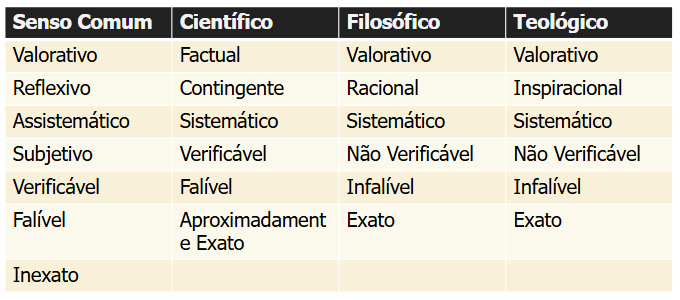

METODOLOGIA E EXPRESSÃO TÉCNICO-CIENTÍFICA¶
Metodologia¶
A palavra "metodologia" vem do grego: meta ("ao largo"), odos ("caminho") e logia ("estudo") — literalmente, o estudo do caminho para chegarmos a um objetivo. Em sentido mais formal, é o conjunto de procedimentos que pode ser utilizado na aquisição sistemática de conhecimento.
Técnicas de Estudo¶
Antes de entrar na metodologia científica propriamente, vale revisar o que a ciência cognitiva diz sobre como estudar de forma eficaz — algo diretamente relevante para qualquer trabalho acadêmico.
Métodos ineficazes¶
- Reler e grifar: técnicas passivas, criticadas por darem uma falsa sensação de domínio sobre o conteúdo. O estudante pode reconhecer o texto, mas isso não garante que consiga explicá-lo com as próprias palavras — o que leva ao esquecimento rápido.
- Estudar na véspera (cramming): embora possa render uma nota satisfatória no curto prazo, essa tática não cria memórias duradouras. O cérebro precisa de tempo para fortalecer as conexões neurais do aprendizado, o que não ocorre em uma única sessão intensa.
- Estudar com distrações: tentar estudar enquanto se divide a atenção com aplicativos (WhatsApp, TikTok) é um desperdício de esforço — o simples ato de trocar de contexto consome tempo e energia mental.
Métodos eficazes (aprendizado ativo)¶
- Prática ativa: em vez de reler, o aluno deve focar no "aprendizado ativo", o que inclui criar perguntas ou quizzes para si mesmo, explicar o conteúdo em voz alta com as próprias palavras, encontrar exemplos concretos para conceitos abstratos, e anotar o passo a passo de problemas (ex: em matemática).
- Estudo espaçado: em vez de maratonas de estudo, é mais produtivo dividir o estudo em sessões curtas e diárias ao longo de vários dias — isso facilita a retenção de longo prazo e melhora a concentração.
- Técnica Pomodoro (gestão de foco): para combater distrações, sugere-se usar blocos de estudo focado (ex: 35 minutos) sem interrupções, seguidos por uma pequena pausa de recompensa (ex: 5 minutos para checar mensagens).
Tipos de Conhecimento¶
Conhecimento Empírico¶
Também chamado de vulgar, intuitivo, de senso comum ou ordinário, é superficial e surge por informação ou experiência casual — constituindo, na prática, a maior parte do conhecimento acumulado por um ser humano no dia a dia. Nele, o sujeito é um expectador passivo: é um conhecimento essencialmente vivencial.
Suas características centrais são:
- Linguagem vaga: o significado dos termos depende fortemente do contexto, e é difícil determinar o que se encaixa e o que escapa de sua significação.
- Ametódico e assistemático: elaborado de forma instantânea e instintiva, sem método explícito.
- Objetividade limitada: muito ligado à vivência, à ação e à percepção. É útil e eficaz para lidar com a rotina, mas se torna impreciso ou incoerente fora dela, admitindo muitas interpretações possíveis. É subordinado a um envolvimento afetivo do sujeito, e tem incapacidade de se submeter a uma crítica sistemática e imparcial.
Conhecimento Científico¶
Baseado em fatos, experimentações e observações, está sempre sujeito a novas teorias e reformulações. Assume que a razão é a única fonte legítima de conhecimento, e surge da necessidade de descobrir princípios explicativos para os fenômenos. É crítico, genérico, busca as causas dos fenômenos e divulga seus resultados — é, nesse sentido, intersubjetivo.
O método científico é o conjunto de passos a serem seguidos ordenadamente na busca da verdade, com três funções: conduzir à descoberta, permitir demonstração e prova, e permitir a verificação do conhecimento produzido.
Conhecimento Teológico¶
Compartilha o mesmo objeto de estudo dos outros tipos de conhecimento, mas é valorativo, inspiracional, infalível, exato, sistemático e não verificável — e exige autoridade divina como fonte última.
Conhecimento Filosófico¶
Também compartilha o mesmo objeto das outras ciências, mas com finalidades diferentes: o filósofo é literalmente o "amigo da sabedoria", e a filosofia é o esforço da razão para questionar os problemas humanos e discernir entre o certo e o errado. É valorativo, não verificável, racional, sistemático, infalível e exato.
Comparando os quatro tipos de conhecimento¶
| Senso Comum | Científico | Filosófico | Teológico |
|---|---|---|---|
| Valorativo | Factual | Valorativo | Valorativo |
| Reflexivo | Contingente | Racional | Inspiracional |
| Assistemático | Sistemático | Sistemático | Sistemático |
| Subjetivo | Verificável | Não Verificável | Não Verificável |
| Verificável | Falível | Infalível | Infalível |
| Falível | Aproximadamente Exato | Exato | Exato |
| Inexato |
O mapa conceitual abaixo situa esses quatro tipos como ramificações de um único "conhecimento": o filosófico nasce do raciocínio e da reflexão, gerando conceitos subjetivos; o empírico (senso comum) é obtido de ações não planejadas; o teológico se origina da crença e da fé, dependente de crenças individuais e da formação moral, e não está sujeito a negação ou confirmação; já o científico decorre do conhecimento sistemático, sujeito à natureza e à comprovação, com base na metodologia científica.
Mapas de referência (tabela e diagrama originais)


Ciência¶
Ciência é a atividade que propõe a aquisição sistemática de conhecimento sobre a natureza biológica, social e tecnológica. Toda ciência possui um objetivo, uma função (utilidade) e objetos de estudo — material (o que se pretende estudar) e formal (o enfoque especial dado a esse estudo). Uma ciência é reconhecida por critérios de organização, método e confiabilidade em seu corpo de conhecimentos.
O conhecimento científico é:
- Objetivo: busca estruturas universais.
- Quantitativo: busca medidas e padrões.
- Homogêneo: busca leis gerais de funcionamento.
- Generalizador: reúne coisas percebidas como diferentes sob leis semelhantes.
Validade do trabalho científico: para que um trabalho tenha validade científica, é necessário que ele se enquadre na ciência (utilizando o método científico) e que tenha finalidade científica (produzindo um resultado verificável) — a combinação dessas duas condições é o que gera uma contribuição científica legítima.
Diagrama de referência

Método Científico¶
É o conjunto de regras e procedimentos que guiam a pesquisa e a obtenção de conhecimento confiável, baseado na observação, na formulação de hipóteses testáveis e na experimentação. O objetivo central é eliminar a subjetividade, garantindo que as conclusões sejam o mais objetivas possível.
Método Indutivo¶
O observador chega a uma lei geral por meio da observação de muitos exemplos particulares.
- Observação sistemática dos fenômenos.
- Elaboração de classificações a partir da descoberta de relações entre os fenômenos observados.
- Construção de hipóteses (tentativas de explicação) dessas relações.
- Verificação das hipóteses.
- Construção de generalizações a partir dos resultados.
- Confirmação das hipóteses.
Esse método parte de dois pressupostos: que determinadas causas produzem sempre os mesmos efeitos (preservadas as condições de observação), e que a verdade observada nas situações investigadas vale para toda situação universal correspondente. O determinismo inerente ao pensamento indutivo faz com que ele não seja necessariamente ideal para qualquer circunstância.
Método Dedutivo¶
Parte de leis gerais para explicar fenômenos particulares. O exercício metódico da dedução parte de enunciados gerais (leis universais), que constituem as premissas do pensamento racional, e chega a conclusões por dedução. Formulam-se premissas e regras de conclusão que se denominam demonstração.
Para que a conclusão seja considerada verdadeira, estabelece-se como condição que todas as premissas sejam verdadeiras, e que a verdade da conclusão já estivesse implícita nelas — nesse caso, a conclusão seria falsa se qualquer uma das premissas fosse falsa. A função do método dedutivo é, nesse sentido, explicar o conteúdo de suas próprias premissas, consideradas universais.
Método Hipotético-Dedutivo¶
Propõe usar o método dedutivo para testar hipóteses: partimos de hipóteses consideradas verdades provisórias sobre os fenômenos estudados, pressupondo que conseguimos reduzir teorias a fenômenos particulares que corroborarão (ou não) nossas hipóteses.
- Coletar expectativas e teorias já consolidadas.
- Formular problemas em torno de questões teóricas e empíricas.
- Formular uma conjectura de solução — deduzindo suas consequências na forma de proposições passíveis de teste.
- Tentar refutar as hipóteses sobre o problema investigado.
Método Dialético¶
Consiste em um modo esquemático de explicação da realidade, baseado em oposições e choques entre situações diversas ou opostas. Diferente do método causal — no qual se estabelecem relações de causa e efeito entre os fatos —, o modo dialético busca elementos conflitantes entre dois ou mais fatos para explicar uma nova situação decorrente desse conflito.
Seus três elementos são:
- Tese: uma afirmação ou situação inicialmente dada.
- Antítese: uma oposição à tese.
- Síntese: o resultado do conflito entre tese e antítese — uma situação nova, que carrega dentro de si elementos resultantes desse embate. A síntese então se torna uma nova tese, que contrasta com uma nova antítese, gerando uma nova síntese, em uma cadeia potencialmente infinita.
O ponto de partida do método dialético na pesquisa é a análise crítica do objeto pesquisado — encontrar as determinações que o fazem ser o que é. Uma de suas características centrais é a contextualização do problema pesquisado, respondendo a perguntas como: quem faz a pesquisa, quando, onde e para quê. As sínteses se constituem em uma relação de tensão, já que a própria realidade contém contradições.
O caminho do método: o ciclo indutivo-dedutivo parte da observação de fatos, que leva à formulação de hipóteses gerais; essas hipóteses passam por verificação, consolidando-se em leis. A partir das leis, nova formulação gera hipóteses ainda mais gerais, que passam por verificação dedutiva até se tornarem teorias; por fim, a dedução a partir de uma hipótese fecha o ciclo em um sistema teórico coerente.
Diagrama de referência

O método científico, de forma geral, é composto por hipóteses, leis e formas de raciocínio.
Hipóteses¶
Uma hipótese é um pressuposto — uma tentativa de explicar o que ainda não se conhece, uma resposta possível para a pergunta de pesquisa. Pode ser elaborada a partir de diversas fontes: observação da realidade, resultados de outros estudos, derivação de outras teorias, ou mesmo a intuição do pesquisador.
Critérios para a formulação de uma boa hipótese:
- Linguagem clara e simples: ex: "idosos dependentes de suas esposas tendem a justificar as atitudes destas como naturais".
- Ser específica: ex: "as mulheres que cuidam de seus maridos, em sua maioria, possuem baixo status econômico".
- Evitar expressões valorativas: como "bom", "mau", "ruim".
- Ser coerente com uma teoria que a sustente.
Hipótese Científica¶
É um conjunto de argumentos e/ou explicações sobre um determinado fenômeno, que ainda não foi corroborado por experimentação. Alguns tipos:
| Tipo | Descrição | Exemplo |
|---|---|---|
| Plausível | Relaciona-se de forma consistente com teorias existentes | — |
| Convalidada | Apoiada em teorias conhecidas e em evidências já observadas na realidade | — |
| Positiva | Afirma a existência de uma relação | "Conflitos provocam mudanças cognitivas nos participantes de discussões em grupo" |
| Negativa | Nega a existência de uma relação | "Não há perigo de contaminação com o vírus da aids pelo contágio indireto" |
| Condicional | Depende de uma condição específica | "Se não forem bem lubrificados, os motores bicombustível têm maior tendência à corrosão que os a gasolina" |
Esquema da hipótese: um modelo científico relaciona uma variável dependente a uma variável independente através de uma função, \(Y = f \cdot X\), onde a função representa os parâmetros e relacionamentos internos do modelo.
Diagrama de referência

Tipos de variáveis envolvidas em uma hipótese:
- Independentes: introduzidas de propósito para verificar sua relação com o comportamento de outras variáveis.
- Dependentes (ou de resposta): aquelas cujo comportamento se quer verificar em função das variáveis independentes — todo resultado obtido em um experimento é, por definição, uma variável dependente.
- Espúrias: não são objeto do estudo, mas interferem no resultado; devem ser cuidadosamente controladas.
- Moderadoras: auxiliam na ocorrência de determinado efeito (como as independentes), mas são consideradas secundárias.
- Intervenientes: ampliam, diminuem ou anulam o efeito das variáveis independentes sobre as dependentes; não podem ser controladas, e são consideradas causas da variável dependente.
- Antecedentes: são as causas do próprio problema que originou a pesquisa.
Leis Científicas¶
Uma lei científica é um princípio universal que conecta fenômenos, ou partes de um fenômeno. Uma teoria científica unifica várias leis — é um "guarda-chuva" que explica um conjunto de fatos aparentemente diferentes entre si.
Metodologias de Pesquisa¶
As seções abaixo cobrem as principais classificações e metodologias de pesquisa: pesquisa quantitativa e qualitativa (esta última incluindo pesquisa etnográfica, pesquisa participante e pesquisa-ação), estudo de caso, análise de conteúdo (técnica que examina sistematicamente o conteúdo de documentos, textos ou discursos para identificar padrões, temas e significados), pesquisa bibliográfica, documental, experimental e de campo, e pesquisa exploratória e explicativa.
De forma resumida, a pesquisa científica se classifica em quatro eixos: quanto à natureza (básica ou aplicada), quanto aos objetivos (exploratória, descritiva ou explicativa), quanto aos procedimentos (experimental, operacional ou estudo de caso) e, dentro dos procedimentos, quanto ao local (laboratório e/ou campo).
Slides originais (outline e diagrama)


Pesquisa quanto à natureza¶
A pesquisa científica, quanto à natureza, se divide em Pesquisa Básica ou Fundamental — que gera conhecimentos sem finalidade imediata, mas que são posteriormente utilizados pela pesquisa aplicada — e Pesquisa Aplicada — que gera produtos, processos e conhecimentos com finalidade imediata. Ambas, em conjunto, visam à melhoria da qualidade de vida.
Diagrama de referência

| Pesquisa Básica | Pesquisa Tecnológica/Aplicada | |
|---|---|---|
| Objetivo | Entender ou descobrir novos fenômenos | Aplicar conhecimentos básicos já existentes |
| Produto | Conhecimentos básicos, artigos científicos | Produtos, processos e patentes; novas tecnologias |
| Reserva/sigilo | Não é reservada — requer divulgação dos conhecimentos | Pode ou não ser reservada |
| Papel | Fundamental para obtenção de conhecimentos elementares | Utiliza conhecimentos básicos, tecnológicos e tecnologias (inclusive de outras áreas) para gerar novos produtos |
Pesquisa quanto aos objetivos¶
- Pesquisa Exploratória: visa descobrir teorias e práticas que modificarão as existentes, criar maior familiaridade com os fenômenos e obter inovações tecnológicas. Normalmente exige experimentações, que acarretam achados e elucidações de fenômenos; quase sempre é feita por levantamento bibliográfico, entrevistas, pesquisas na web etc.
- Pesquisa Descritiva: tipicamente acontece após a exploratória. Objetiva observar, registrar e analisar os fenômenos (com que frequência acontecem, que estrutura têm, como funcionam), implicando na realização de observação sistemática e não participante.
- Pesquisa Explicativa: visa ampliar generalizações, definir leis, estruturar e definir modelos, e relacionar hipóteses existentes — gerando novas, via dedução. Exige maior investimento em síntese, teorização e reflexão sobre o objeto, explicando os "porquês"; exige aplicação de métodos de modelagem e simulação para reproduzir fenômenos, e utiliza amplamente estudos de caso.
Pesquisa quanto aos procedimentos¶
- Pesquisa Experimental: viabiliza novas descobertas — materiais, componentes, métodos, técnicas — sendo usada para obter novos conhecimentos e protótipos. Requer manipulação e coleta de dados imparcial; experimentar significa elaborar e formular novos elementos, testar materiais e componentes, simular eventos, inferir e introduzir variáveis, e realizar modelagens.
- Pesquisa Operacional: investigação sistemática dos processos de produção, usando ferramentas estatísticas e métodos matemáticos, visando selecionar os meios de produção comparando custos, eficiência e valores.
- Estudo de Caso: possibilita explicar um sistema em seu ambiente natural; um "caso" pode ser uma decisão, um programa ou um processo de implantação.
Pesquisa segundo as fontes de informação¶
- Pesquisa de Campo: observa o lugar natural onde ocorrem os fenômenos.
- Pesquisa de Laboratório: artificializa a produção do fato — ou de sua leitura.
- Bibliografia: deve encabeçar qualquer processo de busca que se inicie.
Pesquisa Científica¶
O objetivo principal da pesquisa científica é contribuir para a evolução do conhecimento humano em todos os setores. Ela deve seguir normas metodológicas consagradas pela ciência — ser sistematicamente planejada e executada segundo critérios rigorosos de processamento das informações, e empregar técnicas especializadas de verificação, interpretação e inferência da realidade.
Fases da pesquisa científica¶
1. Estabelecimento do problema¶
Escolha do assunto: selecionar o tema e delimitar a extensão da pesquisa, em termos de tempo e abrangência.
Formulação do problema: pode ser descritiva ("quais as propriedades e características do assunto?") ou explicativa ("como o problema será tratado? por dedução ou indução? como procederá a análise dos fatos e as demonstrações?").
Pesquisa bibliográfica: o levantamento da bibliografia referente ao tema escolhido — um passo decisivo em qualquer pesquisa científica, que elimina a possibilidade de se perder tempo investigando o que já foi solucionado. Suas etapas são:
- Identificação dos itens bibliográficos de interesse — onde encontrar material relevante.
- Seleção: como escolher o material a ser usado; os documentos selecionados devem ser confiáveis.
- Fichamento: transcrição dos dados de interesse em fichas (em papel ou digitalizadas), para posterior consulta e referência, registrando as informações do levantamento bibliográfico.
- Redação da revisão bibliográfica: análise e interpretação do que foi lido, resultando em um texto/resumo.
Tipos de textos científicos
Cientistas precisam escrever para apresentar o resultado de suas pesquisas, obedecendo a normas pré-estabelecidas.
- Artigos científicos e papers: apresentam uma síntese do conhecimento ou abordagens atuais, ou temas novos — uma avaliação e/ou interpretação de descobertas. São escritos na primeira pessoa do plural, ou de forma impessoal. Possuem cabeçalho (título, autor, local de trabalho etc.), sinopse (resumo e/ou abstract), corpo do artigo (introdução, desenvolvimento e conclusão) e parte referencial (referências bibliográficas, apêndices, anexos, agradecimentos).
- Comunicação científica, informe científico, resenha crítica.
-
- TCC: consiste em uma revisão bibliográfica restrita, com o objetivo principal de assimilação de conteúdo.
- Dissertação: mais aprofundada que o TCC (é o relato de pesquisa exigido para obtenção do grau de mestre), com objetivo principal de refletir sobre o tema, e com revisão bibliográfica mais abrangente e profunda.
Monografia científica: dissertação que trata de um assunto particular de forma sistemática e completa, relatando um estudo sobre um tema específico e seguindo um formato pré-estabelecido. Engloba o TCC, a dissertação (mestrado) e a tese (doutorado) — o que diferencia cada um é o tipo e o nível da pesquisa realizada e relatada:
Estrutura típica de uma monografia:
- Capa.
- Elementos pré-textuais: página de rosto, dedicatória, agradecimentos, resumo, sumário, lista de ilustrações, abreviaturas e siglas.
- Sequência principal: introdução, revisão bibliográfica, desenvolvimento e conclusão — cada capítulo deve incluir referências à bibliografia consultada sobre o assunto daquele capítulo.
- Introdução: justificativa (motivação e relevância do trabalho, objetivo e escopo da pesquisa, apresentação sintética da questão solucionada, metodologia utilizada), referências a publicações do próprio autor sobre o assunto, e um parágrafo descrevendo o conteúdo do restante do documento.
- Revisão bibliográfica: resultado da pesquisa bibliográfica sobre o tema, contendo uma análise crítica sobre o estado da arte.
- Desenvolvimento (um ou mais capítulos): informação nova (o trabalho desenvolvido pelo autor), exposição dos fundamentos (argumentos), discussão (apresentação dos contra-argumentos) e demonstração (apresentação de provas, demonstração do raciocínio).
- Conclusão: síntese das ideias defendidas, retomando as pré-conclusões expostas ao longo do texto e reforçando a linha de pensamento que sustenta a monografia — a introdução aponta problemas, e a conclusão sintetiza a postura do autor diante deles.
- Elementos pós-textuais: apêndices (texto escrito pelo próprio autor, mas não central ao trabalho), anexos (textos de terceiros relacionados ao tema), bibliografia, índice onomástico (lista dos autores citados, com indicação das páginas) e índice remissivo (lista dos termos do texto, com indicação das páginas).
-
APUD: termo latino que, em textos acadêmicos, significa "citado por", "conforme" ou "segundo". É usado para indicar uma citação direta (cópia literal) ou indireta (texto reescrito) de um texto ao qual não se tem acesso direto — aparece no rótulo de uma referência bibliográfica para indicar uma "citação de citação".
Redação do plano de pesquisa: etapa final do estabelecimento do problema.
2. Organização da pesquisa¶
Formulação de hipóteses, descrição do método empregado, e definição do corpus (dados da pesquisa).
3. Execução da pesquisa de campo¶
Elaboração do plano de trabalho, coleta de dados, e análise dos resultados obtidos.
4. Redação dos resultados¶
Redação preliminar, revisão gramatical e de conteúdo, redação final, e bibliografia.
Projetos de Pesquisa¶
Processo de pesquisa¶
- Projeto: o que vai ser feito, qual problema vai solucionar, quais hipóteses se tem.
- Coleta de dados: como fazer, que tipos de dados são necessários.
- Análise dos dados: classificação e organização das informações, estabelecimento de relações entre os dados, tratamento estatístico.
- Elaboração da escrita.
Objetivos¶
Objetivos são os resultados a alcançar. O objetivo geral (ou final) responde diretamente ao problema de pesquisa, enquanto os objetivos específicos operacionalizam o modo como se pretende atingi-lo — eles são as etapas que devem ser cumpridas para chegar ao objetivo geral. Objetivos devem ser redigidos com o verbo no infinitivo.
A redação de objetivos específicos costuma seguir uma hierarquia de níveis cognitivos, cada um associado a um conjunto de verbos:
| Nível cognitivo | Descrição | Verbos típicos |
|---|---|---|
| Conhecimento | Retenção da informação apropriada | definir, identificar, nomear, listar, descrever, enumerar, distinguir, especificar |
| Compreensão | Translação, interpretação e extrapolação | distinguir, explicar, predizer, discutir, ilustrar, converter, relacionar, deduzir |
| Aplicação | Utilização dos conteúdos apreendidos nos níveis anteriores | aplicar, resolver, construir, calcular, praticar, operar, manipular |
| Análise | Decompor em partes para entender a estrutura | analisar, distinguir, identificar, diferenciar, categorizar, comparar, examinar, inferir |
| Síntese | Combinar as partes para formar um todo original | escrever, propor, combinar, criar, compilar, organizar, formular, conceber, projetar |
| Avaliação | Julgar o valor de um conteúdo | julgar, apreciar, comparar, concluir, avaliar, validar, justificar, fundamentar |
Referencial Teórico¶
É a construção de um quadro de referência ligado ao problema de pesquisa, do qual o pesquisador extrai subsídios para definir com mais clareza os aspectos a serem levantados em campo. Trata-se da construção de uma base conceitual organizada e sistematizada do conhecimento disponível pertinente ao objeto pesquisado — buscam-se teorias, abordagens e estudos que permitam compreender o fenômeno de múltiplas perspectivas, e o papel do pesquisador é promover um diálogo entre diferentes autores.
O referencial teórico funciona como a base de sustentação do trabalho (teoria de base e definições), reflete o nível de conhecimento do autor, familiariza o leitor com trabalhos correlatos, e ajuda a comprovar a originalidade do trabalho.
Revisões de Literatura¶
Uma revisão é o processo de busca (sistemática ou não), análise e síntese de um corpo de conhecimento — delimitado de várias formas — relacionado à resposta de uma pergunta específica. "Literatura" cobre todo o material escrito sobre o tema, em diversos veículos.
A revisão de literatura serve para conhecer o que já existe, identificar oportunidades de pesquisa, não reinventar a roda, e mostrar ao leitor a originalidade do trabalho. Mais especificamente, ela permite:
- Delimitar o problema da pesquisa.
- Buscar novas linhas para pesquisa.
- Evitar abordagens mal sucedidas.
- Obter insights metodológicos.
- Identificar recomendações de outros pesquisadores.
- Buscar suporte na teoria já amadurecida.
- Distinguir o que foi feito daquilo que precisa ser feito.
- Descobrir variáveis importantes e relevantes.
- Sintetizar e obter uma nova perspectiva.
- Identificar relações entre ideias e práticas.
- Adquirir e melhorar o vocabulário associado ao assunto.
- Entender a estrutura do assunto.
- Relacionar ideias e teorias às aplicações.
- Identificar as principais técnicas e metodologias de pesquisa que estão sendo utilizadas.
- Inserir o pesquisador no contexto histórico, para mostrar familiaridade com o estado da arte.
Slides originais


Tipos de revisão¶
| Tipo | O que é | Melhor para | Rigor |
|---|---|---|---|
| Narrativa | Descrição ampla e aprofundada do desenvolvimento e estado da arte de um tema, influenciada pela visão e expertise do autor | Fundamentação teórica de TCCs, dissertações e teses; artigos de opinião ou atualização rápida | Subjetiva — maior risco de viés de seleção (o autor escolhe os estudos que mais lhe interessam) |
| Sistemática | O tipo mais rigoroso, no topo da hierarquia de evidências; busca minimizar o viés e fornecer a melhor evidência disponível | Responder questões clínicas/científicas específicas (eficácia, diagnóstico, prognóstico) e basear decisões em saúde e políticas públicas | Protocolo registrado (ex: PROSPERO); busca exaustiva, explícita e replicável; inclusão geralmente restrita a estudos primários do mesmo delineamento; pode incluir meta-análise |
| De Escopo (Mapeamento) | Mapeia rapidamente e categoriza as evidências para identificar tipos de estudos, conceitos e fontes sobre um tema mais amplo, sem necessariamente avaliar a qualidade da evidência | Determinar o escopo e a natureza de uma área de pesquisa, identificar lacunas, decidir se uma revisão sistemática completa é viável | Pergunta mais ampla que a sistemática; não costuma avaliar o risco de viés dos estudos |
| Integrativa | Permite a síntese de pesquisas com diferentes metodologias (quantitativas e qualitativas) e/ou tipos de estudos (empíricos e teóricos) | Áreas onde o conhecimento é fragmentado em diferentes abordagens metodológicas (comum em Enfermagem e Ciências Sociais); definir conceitos, revisar teorias | Usa um método sistemático, mas a inclusão de diversos delineamentos pode afetar o rigor ou a comparabilidade da síntese |
Processo da revisão sistemática: pergunta específica (formulada em PICO) → protocolo → busca sistemática → seleção de estudos por dois revisores independentes → avaliação do risco de viés → síntese/meta-análise. Esse processo se organiza em três grandes fases:
| Planejando a Revisão | Conduzindo a Revisão | Escrevendo a Revisão |
|---|---|---|
| Estudo de Viabilidade | Buscar Estudos Primários | Escrevendo o Documento |
| Definir Questões de Pesquisa | Selecionar Estudos Primários | Validando o Documento |
| Escrever o Protocolo da Revisão | Avaliar a Qualidade dos Estudos | |
| Validar o Protocolo da Revisão | Extração dos Dados | |
| Síntese dos Dados |
Diagrama de referência

Processo da revisão de escopo: pergunta ampla → protocolo recomendado (ex: PRISMA-ScR) → busca → mapeamento/categorização dos dados → relatório descritivo.
Processo da revisão integrativa: pergunta (problema/prática) → busca sistemática → seleção de estudos → extração de dados → avaliação da qualidade (opcional, mas recomendada) → síntese e discussão.
Definindo uma questão de pesquisa¶
Antes de revisar a literatura, é preciso definir uma questão de pesquisa: primeiro identifica-se o tema, depois uma dificuldade sem solução na literatura. O problema deve relacionar pelo menos duas variáveis (dependente e independente), e deve ser empiricamente verificável.
| Categoria | Exemplos de perguntas |
|---|---|
| Exploratórias — existenciais | "X existe?" |
| Exploratórias — descritivas/classificatórias | "Como X é?", "Quais são suas propriedades?", "Como pode ser categorizado?", "Como pode ser medido?", "Quais são seus componentes?", "Quais são todos os tipos de X?" |
| Exploratórias — comparativas | "Como X é diferente de Y?" |
| Base-rate — frequência | "Quão frequentemente X ocorre?", "Qual é a quantidade média de X?" |
| Base-rate — processo-descritiva | "Como X normalmente funciona?", "Qual é o processo pelo qual X acontece?", "Em qual sequência os eventos de X ocorrem?" |
| Relacionais | "X e Y são relacionadas?", "Ocorrências de X correlacionam com ocorrências de Y?" |
| Causais — causalidade | "X causa Y?", "X impede Y?", "O que causa Y?", "Qual efeito X tem sobre Y?" |
| Causais — comparação | "X causa Y mais do que Z?", "X é melhor em impedir Y do que Z?" |
| Causais — comparação-interação | "X ou Z causa mais Y em uma condição e não em outras?" |
| Design | "Qual é uma forma efetiva de realizar X?", "Quais estratégias ajudam a alcançar X?" |
Ferramentas de apoio¶
Ferramentas como StArt e Parsifal ajudam a sistematizar e documentar o processo de revisão de literatura (especialmente a sistemática), gerenciando a seleção e triagem de estudos.
Como sistematizar a pesquisa bibliográfica¶
- Listar os títulos de periódicos e eventos relevantes ao tema, mais os periódicos gerais em computação que eventualmente possam ter algum artigo na área.
- Obter a lista de todos os artigos publicados nos últimos cinco anos (ou mais) nesses veículos.
- Selecionar, dessa lista, os títulos relacionados ao tema de pesquisa.
- Ler o abstract desses artigos e, com base na leitura, classificá-los como relevância "alta", "média" ou "baixa".
- Ler os artigos de alta relevância e fazer fichas de leitura, anotando os principais conceitos e ideias aprendidos — anotando também outros títulos possivelmente mencionados nas bibliografias (mesmo que com mais de cinco anos), incluindo-os na lista de leitura.
- Dependendo do caso, ler também os artigos de relevância média e baixa — mas sempre começando pelos de alta relevância.
Erros comuns em revisões de literatura¶
- Não relatar claramente o que foi encontrado na literatura sobre o estudo do pesquisador.
- Não ter tempo suficiente para descrever as melhores fontes usadas na revisão.
- Utilizar fontes secundárias ao invés de fontes primárias.
- Não examinar criticamente todos os aspectos do projeto e da análise da pesquisa.
- Não reportar os procedimentos utilizados na revisão bibliográfica.
- Reportar resultados estatísticos isolados, em vez de sintetizá-los por métodos de qui-quadrado ou meta-analíticos.
- Não considerar pesquisas contrárias e interpretações alternativas.
Pesquisa¶
A pesquisa é uma ferramenta para gerar inovação, criar novos artefatos, explorar o desconhecido e entender sistemas. É uma ferramenta sistemática para obtenção de novos conhecimentos, enquanto o desenvolvimento é a aplicação desse conhecimento já existente. Toda pesquisa começa com ideias que buscam resolver problemas, trazer conhecimento ou gerar novas questões — e as fontes dessas ideias são variadas: experiências, bibliografias, teorias, observação, crenças, intuições e conversas.
Definição do problema¶
- Problemas práticos: causam desconforto e são resolvidos por uma ação que muda o mundo.
- Problemas de pesquisa: são resolvidos por uma compreensão melhor dos fatos.
Um problema de pesquisa deve ter formulação clara, precisa e viável, composto por duas partes essenciais: a definição do problema (a pergunta a ser respondida) e a hipótese de pesquisa (o resultado esperado, ou a possível resposta).
Questão de pesquisa¶
A questão de pesquisa é o refinamento do problema: deve ser precisa, não pode ser óbvia, e precisa atender a certos requisitos — suas respostas não devem ser previamente conhecidas, devem ter evidência empírica, e a busca por elas deve usar meios éticos.
Ela pode ser, assim como visto acima: exploratória (ex: "X existe?", "Como X é?"), relacional (ex: "X e Y são relacionadas?"), causal (ex: "X causa Y?", "O que causa Y?") ou de design (ex: "Qual é uma forma efetiva de realizar X?").
Pesquisa Qualitativa¶
Abordagem que foca nos "porquês", buscando compreender fenômenos humanos e sociais através de significados, motivações e experiências. Costuma exigir mais tempo em campo, mais análise de dados e planejamento, procedimentos rigorosos de coleta, e o uso de perguntas abertas e de uma variedade de fontes de dados.
Principais métodos:
- Entrevistas semiestruturadas: conversas guiadas por um roteiro flexível, para explorar percepções e experiências.
- Pesquisa-ação: busca resolver um problema identificado em conjunto com os participantes, envolvendo grande interação e vários ciclos.
- Grupos focais: reunião de 5 a 10 participantes para discutir um tema específico, conduzida por um moderador.
- Observação participante / Etnografia: o pesquisador observa (e às vezes participa) do grupo estudado — podendo ser plena (participação ativa), parcial (algum distanciamento) ou não participante (apenas observa). A etnografia, especificamente, busca entender tradições, costumes e hábitos, exigindo convívio próximo e longo tempo em campo.
- Estudo de Caso: exploração detalhada de um único caso (ou poucos casos), como uma organização ou fenômeno social.
- Fenomenologia: utiliza entrevistas para entender a essência das experiências, e o significado que as pessoas atribuem a elas.
- Teoria Fundamentada (Grounded Theory): desenvolve teorias a partir da coleta e análise sistemática dos dados qualitativos.
- Narrativa: explora as histórias de vida dos participantes, para entender como eles constroem significado a partir de suas experiências.
- Diários e auto-relatos: registros reflexivos e contínuos de experiências, úteis para estudos de aprendizado ou hábitos.
Pesquisa Quantitativa¶
Concentra-se em dados concretos que podem ser medidos e quantificados, utilizando com frequência números e estatísticas para analisar e generalizar os resultados.
Questões Éticas da Pesquisa¶
- Obter aprovação de comitês de ética.
- Revelar os propósitos do estudo aos participantes.
- Ser imparcial.
- Ter cuidado com a coleta de dados, com os resultados obtidos, e com a publicação do estudo.